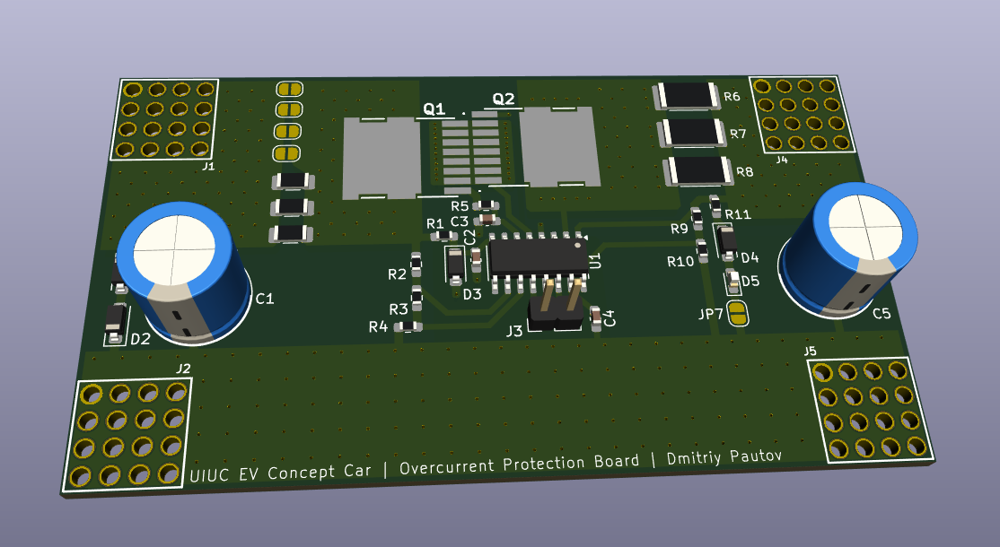
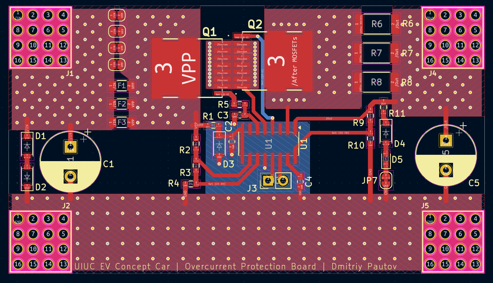
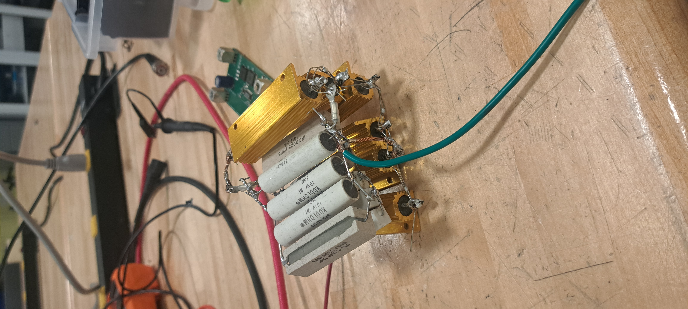
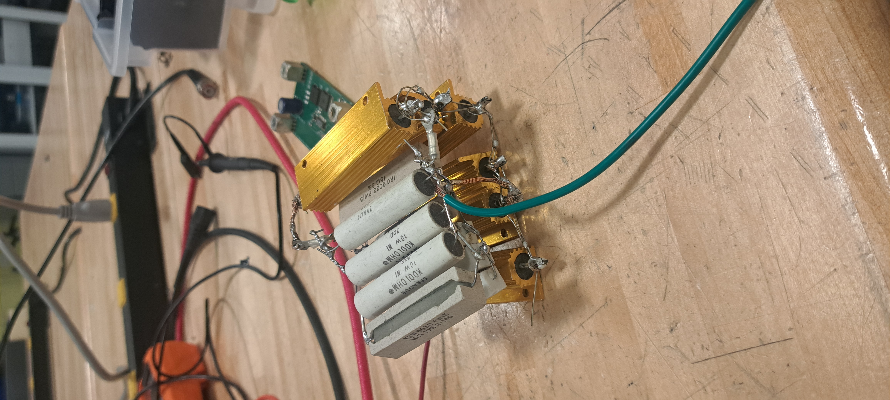

UIUC EV Concept Car: Overcurrent Protection Board
11/18/2024
This project, completed for the UIUC EV Concept Car RSO, is an overcurrent protection board that trips when the current exceeds 30A.

For testing things like the 6-step inverter & motor, we use the main battery directly to source the 20A at 48V the motors require, since a sufficiently capable power supply is hard to come by & expensive. Problem is, the battery can happily source much more current if something goes wrong (e.g. someone shorts the output, a capacitor fails short, etc.) leading to both magic smoke and fire being released. The battery is custom-built and technically has a BMS which should prevent itself from catching fire, but shouldn't be relied on and is also experimental, not to mention if something else is on fire it could spread to the battery. This board acts as a backup going in between the battery and our motor driving circuitry, tripping if the current exceeds 30A, and having some fuses if the current significantly exceeds that.

The circuit itself isn't complicated, but dealing with 30A is tricky, requiring beefy traces for both minimizing the parasitic resistance and dissipating heat. To account for this, I designed the PCB based on a 2oz copper stack up and super thick traces via stitched traces on both sides. The screw terminals I used are rated for 180A, so no worries there either. The PCB is based around the LTC4364, which requires just a few voltage dividers to set under and over-voltage conditions, shunt resistors that drop 50mV at the desired tripping current, and some miscellaneous components to make the circuit work. For the FETs, I went with some NVBLS001N06C fets which are rated to 422A, very low Rdson of 0.9mΩ, and have great thermal characteristics. The shunt resistor is made up of 3, 5mΩ shunt resistors in parallel to achieve the odd 1.6mΩ value needed and to increase the current rating. For the backup fuses in case the LTC4364 fails, I tacked on 3 footprints for 1206 SMD fuses. Single fuses with a rating of 50A exist in this package, but I fear that the narrow footprint of a single fuse joined by solder would have quite a bit of parasitic resistance and poor ability to dissipate the heat, which could lead to troubles. If this does turn out to be problematic, the additional footprints would allow us to use lower-rated fuses in parallel. However, this is far from ideal, as variations in resistance between the fuses would cause uneven current distribution, making the actual tripping current unpredictable. Although assuming we test everything, I believe this is acceptable as a fallback. I also added some jumper links that could be soldered to bypass the fuses (although they will probably blow up under 30A). Other than that, I added some capacitors to smooth both input and output, and they are naturally bled by the voltage dividers on the board. I also added an indicator LED that lights up if the output voltage is around 48V.
If the PDF does not load, click here to view or download it.
The PCBs are currently being ordered. Ill update this page with how testing of this board goes. Email me if you want a copy of the KiCAD Project or Gerbers.
Update 5/1/2025:
Welp, there are a few issues after putting together some boards. Look up and see if you can spot them :)

3 assembled boards for testing
Here is my test setup. I used a Power Analyzer (because I had one) to measure the series current through the OC board. I also attached an oscilloscope to measure other parameters—initially the voltage drop across the shunt, and later things like the timer capacitor. Since 30A @ 48V = 1.4kW, there was no suitable bench power supply, so I used one of our old batteries (not pictured). This battery has no BMS or safety features, and will happily dump over 1000A if you short it—strong enough to destroy its problems before it destroys itself.
Because of that, I couldn’t directly short the OC board without blowing fuses or killing the power analyzer, so I had to build a load that could take the power for a few seconds. My solution was to solder together all the high-power resistors I could find in parallel. It’s really only rated for something like 400W, but it survives the 1.4kW bursts for a few seconds. Shorting the 48V gives 34A, so the total resistance is around 1.4Ω.
 

Here are the known problems:
1. Messed-Up Terminal Footprint
Only 1 of the 16 pads was actually connected to the copper planes. That’s nowhere near enough to handle 30A, and it kept blowing up. As a temporary fix, I scratched off the solder mask on the bottom and soldered on some copper wick to act as high-current bus bars. Here's 2 images:


2. Big MOSFET Loops
This isn’t a showstopper, but it’s not great either. I forgot to place vias on the actual pads of the MOSFETs, which means the current has to loop awkwardly underneath and between them. That increases inductance and makes things messy. Routing your power stage solo at 3AM is apparently not ideal. Will definitely fix this in the next revision.
3. No Flyback Diodes (Oof)
This is the worst one. During testing, I found that when connecting a ~1Ω load at 48V and drawing 34A, the board couldn’t shut off the current. The IC seemed to be doing its job—pulling the gate low, timing out properly—but the MOSFET would still die every time while trying to switch off the 34A load.
Turns out, there’s about 10µH of stray inductance in my test wiring. In a real-world setup (e.g., with a motor), you'd see similar inductance.
So when you try to switch 34A → 0A in ~50ns:
dI/dt = 680e6 A/s
V = L * dI/dt = 10e-6 * 680e6 = about 6800V
These MOSFETs are rated for 60V in reverse before avalanche. So yeah, they go boom. Adding flyback diodes would’ve saved them. I’ve added a temporary botch that makes the boards usable for now.
4. Timer Cap Trace Keeps Peeling Off
This one’s on me for mistreating the board a bit, but the trace is tiny and extra sensitive. I’ll widen it and reinforce it in the next version.
Email me if you have questions: dp@dpautov.com
Get a copy of my resume